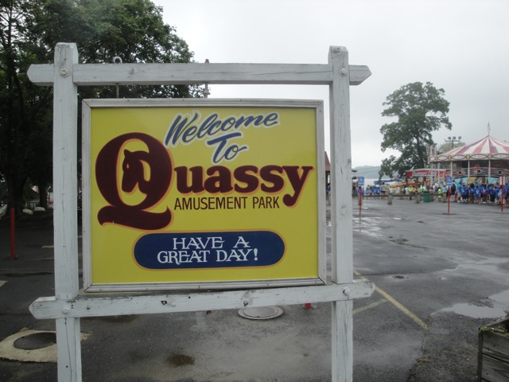
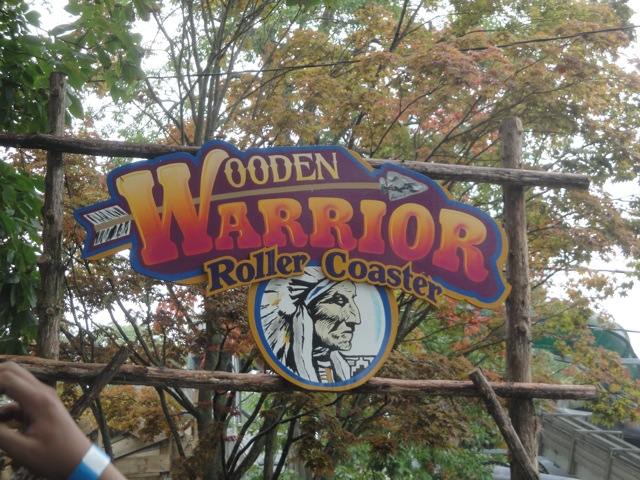
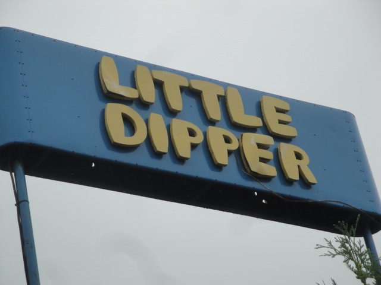
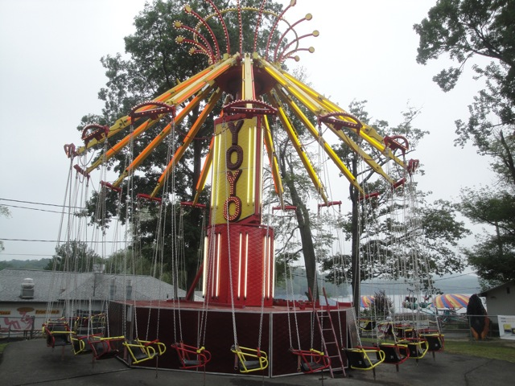
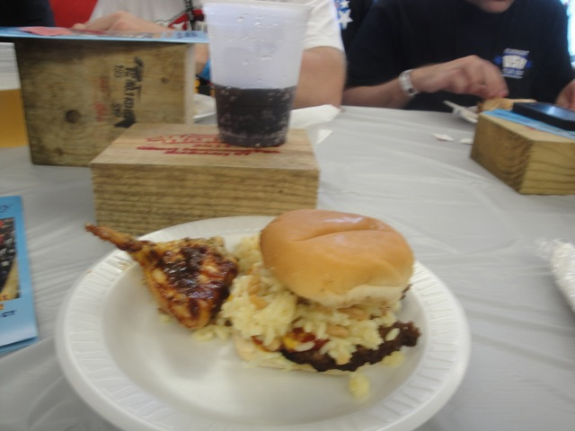

| |
Quassy Review

Quassy is not something that most of you would consider to be an extreme park by any definition. Not by a long shot. But it is a really fun little park. Do not be underestimated by its looks. It does contain a great wooden coaster as despite it's small size, Wooden Warrior really packs a punch and is one of the better wooden coasters in the country. And the rest of the park is really nice. No, it's not dripping with crazy rides or anything, but its just a fun little place to spend a day with several fun rides to keep you occupied. There is this charm that most small parks tend to have, and Quassy is no exception. It has a feel that this place is for locals, and as such, they will treat you as a local if you come (as long as you're not too crazy). If you're used to the major stuff like Six Flags and Cedar Fair parks and expecting the next strata-coaster, go home because this is not the park for you. But if you're not the kind of person who only gives a damn about roller coasters, then you should enjoy Quassy. It literally feels like you've been teleported into an RCT Scenario with random rides plopped down and just a good friendly atmosphere to enjoy yourself in for a couple of hours. Yes, I do know that it's overshadowed by its neighbor park and much bigger rival park Lake Compounce, but Quassy is also a really fun little park with a great wooden coaster right nearby. So definetly stop on by and give it a visit when you're in Conneticuit.
Rollercoasters
There is a link to a review of all the Rollercoasters at Quassy.
Top Coasters
Wooden Warrior Review

Kiddy Coasters
Little Dipper Review

Flat Rides
All right. Here are all of the flat rides that are found at Quassy. Now Quassy may not have any truley amazing flat rides, but the ones that they do have can be really good. For instance, their chairswings. Now they may not look like anything special, but these are without a doubt, the best chairswings I have ever ridden at any park. I'm not sure if it was just the ride I had on it, but the seats were tilting, I was swinging like crazy, and it was just the coolest and wildest ride I ever had on any chairswings at any park. So if you're a fan of chairswings, you definetly have to check these out. Their mini-drop tower is also an intersting one. There was something weird about it. On the one hand, it was easily the most powerful of the mini-drop towers I had ever ridden. But it made my legs hurt for some strange reason. There seemed to be no logical reason why it would, so maybe it was just me. I'll have to ride it again and see. There are multiple slides here that while they aren't crazy or anything, are just a lot of fun. The Paratrooper however, seemed pretty weak and tame. So that's a bummer. Their tilt a whirl and music express were fun, but nothing special. And those were all the flat rides I rode. They also have a trabant, some bumper cars, a carousel, and a teacups ride to enjoy.

If you want the sensation of falling out of the ride, then take a spin on the Yo-Yo here.
Water Rides
There really aren't many water rides at Quassy. The only water ride here is a boat you can take around Lake Quassapaug. Though I do feel that a small log flume would fit in quite nicely here. Future addition? =)
Water Park
And then there's their water park. I can't judge since I never visited it, but I'm pretty sure that it's fun. I mean, it certainly looks good by the photos. Perhaps next time, I'll hop in and try it out.
Dining
Quassy is not exactly #1 in the food department. Nothing here really stands out or is amazing or anything, but I enjoyed the food that I did get at Quassy. The lunch we got consisted of chicken, hamburgers, and rice. So being the creative person that I am, decided to mix the two together and have myself a Rice Burger. And hey, it's not bad!! The park also gave us a coupon for our choice of ice cream, cotton candy, or fried dough. So there are also a wide variety of sweet treats for you to enjoy during your visit to Quassy. It may not be special, but it does taste good.

Don't knock the Rice Burger until you try it.
Theming and Other Attractions
Here are the reviews of all the other stuff at Quassy. Now when it comes to theming, theres pretty much none. It's a pure amusement park. No theming at all whatsoever. The park is completely butt-naked with theming. But that's ok. As for other stuff, there's not too much other stuff. It's mostly rides here. There might possibly be a show, but I don't think there is. But hey, there's still plenty of other stuff to do.
In Conclusion
Quassy may appear as a quick little credit whoring stop on the outside, but it's actually a really nice little park. Not only is Wooden Warrior a damn good wooden coaster, but Quassy is just a really fun place to visit. There's just this...charm to the park. It's the kind of place that you just stop in to relax at. It all works just so well. Come here with a group of friends and have a blast on rides that may not be anything special, but you're here for a fun day, and this place certainly delivers. Definetly give it a stop on your way to Lake Compounce or if you're just in Conneticuit. Wooden Warrior is good and the rest of the park is nice as well.
Enthusiast FAQs.
*Are there kiddy coaster restrictions? - No. Little Dipper has no restrictions.

Tips
*Get multple rides on Wooden Warrior.
*Check out the rest of Quassy as well.
*Have Fun!!!!
Location
Middlebury, Conneticuit, U.S.A
Theme Park Category:
Small Park
Last Day Visited
July 29, 2011
Video
I currently don't have a video for Quassy due to it's small size and not having enough footage. I'll have to shoot more video there before I can make the Quassy video.
Complete Update List
2011
TPR's Northeast Trip
Here's a link to the parks website.
Home
|